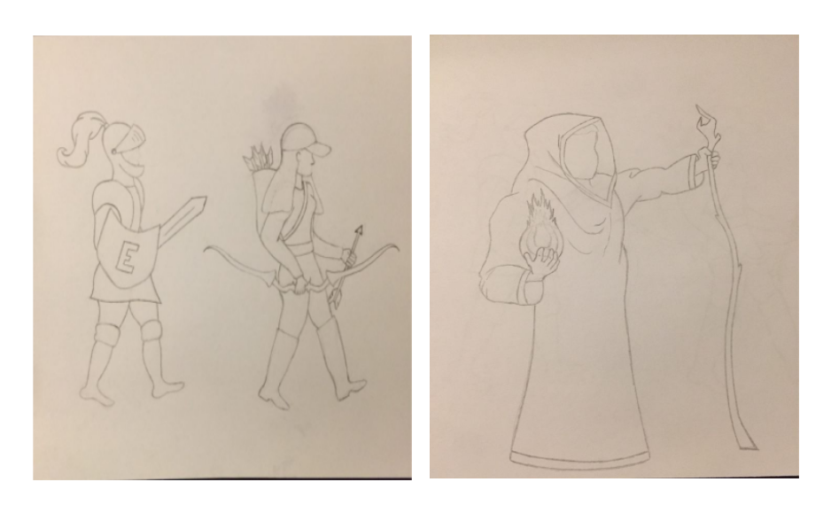

Super Coliseum Storyboards
See some preliminary concept art for Super Coliseum
Enemies

A. The arena will be filled with a large number of fodder enemies. These are characterized by low health (1-2 hits), low damage (1 heart max), and slow speeds (~ 2/3 slowest hero speed)
B. The second most common enemy are warrior enemies. These are characterized by moderate health (2-4 hits), low damage (1 heart max), moderate speeds (~slowest hero speed), and more complex strategies.
C. An even less common enemy are the brute enemies. These are characterized by high health (5-10 hits), moderate damage (2 heart max), slow speeds (~2/3 slowest hero speed), and aspecial move(charge, breath fire, etc).
D. About as common as brute enemies are support enemies. These are characterized by moderate health (2-4 hits), low damage (1 heart max), high speeds (faster than slowest hero speed), and a support move(heal other enemies, etc).
E. Finally, there is one boss enemy. They are characterized by very high health (20+ hits), high damage (2-4 heart), and multiple special moves. The level ends when this enemy is defeated.
Character Selection

This is the hero selection screen. Here, players can see sprites of each hero class and their unique stats and perks. There are three total classes that the player can pick from: Knight, Ranger, and Mage.
Each class has different attributes and perks. For example, the Knight class has the most health of the three but moves the slowest. The player can move to each different class by simply moving left and right with the controller. Once the player has decided on which class they would like to use during the duration of the game, they can press the action button to start playing!
Heroes

Here we have the first concept art for our three main characters, or heroes as we like to call them. From right to left you have the Knight, the Ranger, and the Mage, respectively. Each hero is drawn with their main weapons and the mage is drawn not only with its main weapon but also a glimpse at the its special move which includes summoning and throwing fireballs.
Hero Attacks
Here is the different kind of attacks unique to each hero class.
When the player chooses the Knight class, they will be equipped with a sword and a shield. The sword is the knight's primary weapon to attack with while the shield is a special move, that blocks incoming projectiles. The player can hold the action button to wind up the knight's attack to do increased damage as shown by the middle two storyboards on the far left side.
When the player chooses the Ranger class, they will be equipped with a bow and arrow. The ranger's basic attack uses one arrow but if the action button is held for a long enough period of time, the ranger can shoot three arrows at enemies. The ranger has a special move that allows it to move 2x faster for around 1-2 seconds.
When the player chooses the Mage class, they will be equipped with a staff that shoots fireballs. When the player charges up the mage's attack, the fireball goes through all enemies in its path and explodes at the end of its range. The mage's special move allows them to leave a fire wall behind them as they move for a short period of time.
UI

This storyboard shows what the top of the in-game screen will look like. To the far right, we have the inventory system where players can switch between their main weapons and things they have picked up.
Next to the inventory, we have the players health icons, shown by hearts. Each character class starts with a different amount of hearts. The health hearts can take on three different forms designated by three different colors. A red heart is the current, basic health that the player has. A heart with little to no color in it shows that the player has lost health. A dark, gray heart means the player has picked up armor.

This collection of storyboards shows the different states a player will see when they are hit by an enemy, when they hit an enemy, and when the player loses all their health.
Items

Here are some items that the user can expect to see throughout their journey.
Armor, shown by the shield icon, gives the player extra HP. This is shown by the player's health at top of the screen; A heart will change colors to show that they picked up armor. Armor effects are different for each hero class.
Next, we have a bomb, shown by the bomb icon. Bombs can be picked up and thrown by the player to damage players within the bomb's radius.
Finally, we have your basic HP potion, shown by the vile. This potion restores a little bit of the players health.